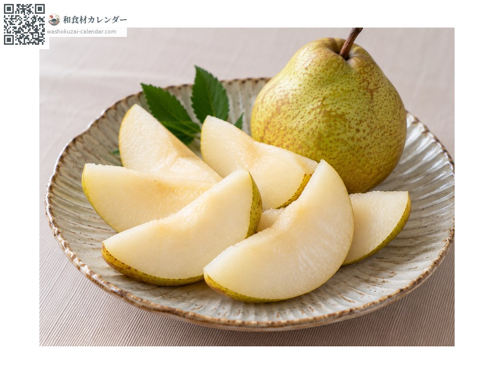
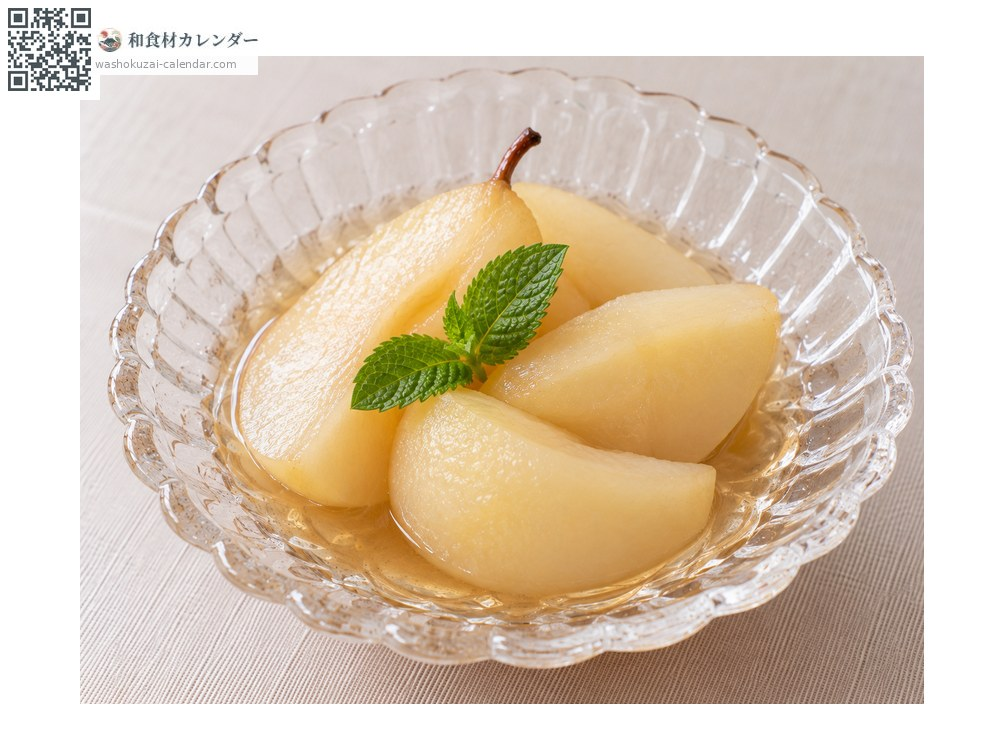
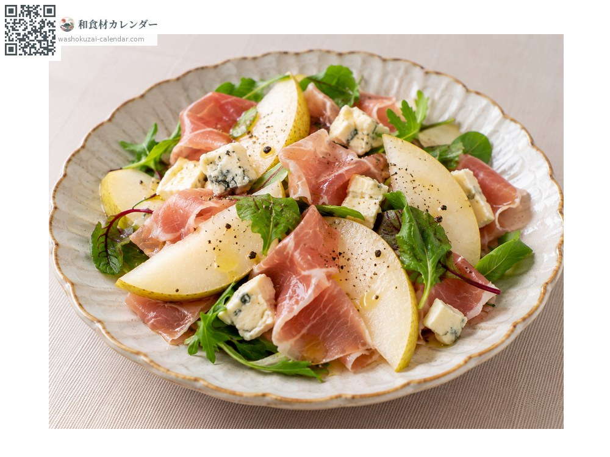
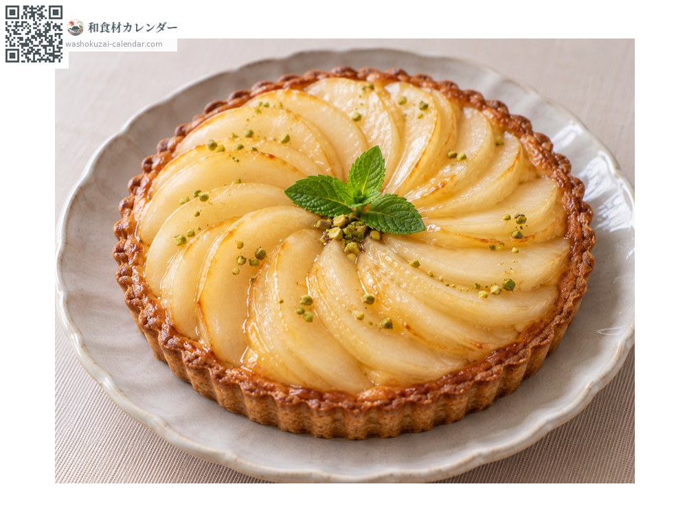

水果
西洋梨
洋梨 ようなし
別名yonashi、younashi
當令時期為10月、11月

當令時期
1月
2月
3月
4月
5月
6月
7月
8月
9月
10月
11月
12月
當令有供應
料理方式

直接生食
追熟後再吃，果肉滑順而香氣濃郁。

糖漬
用白酒燉煮，香氣格外突出。

沙拉
與生火腿或起司搭配，甜味與鹹味相互調和。

塔
切薄片排列，是西式甜點的經典。
挑選方式
果實沒有損傷。追熟前很硬，按壓果梗周圍有彈性就是食用時機。
保存方式
在常溫下追熟。變軟後冷藏並盡早食用。
主要產地
小知識
日本的主力品種是拉法蘭西，山形縣的產量約佔全國七成。採收時果實很硬、味道也還沒出來，要追熟兩週左右香氣與甜味才會顯現。正因為多這道工序，它也被稱為「難以掌握食用時機的水果」。